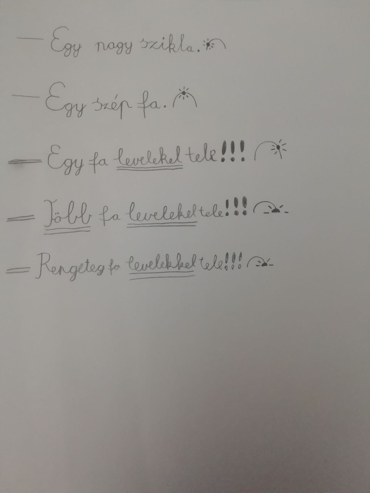
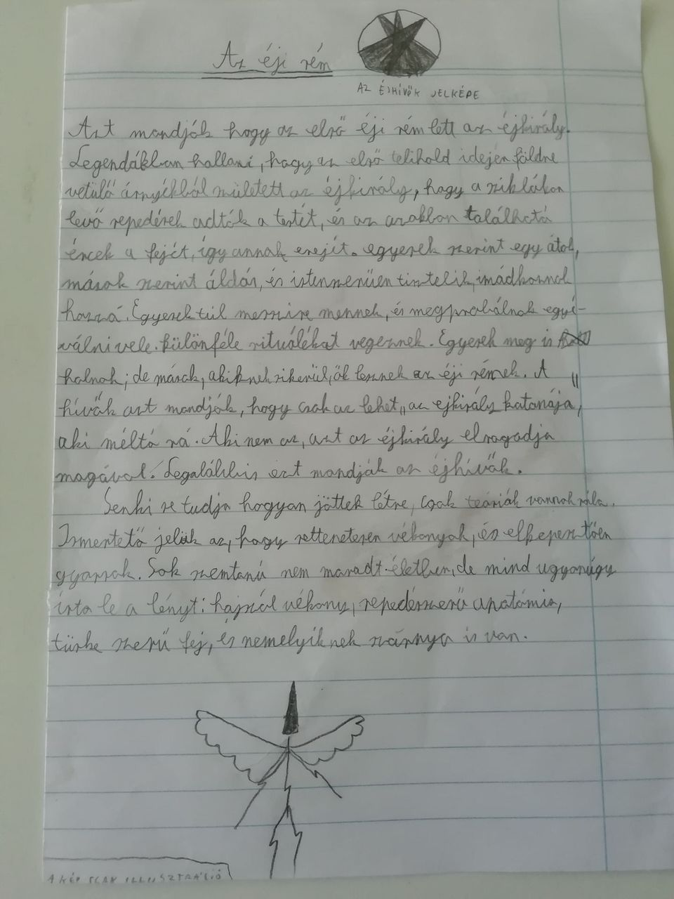
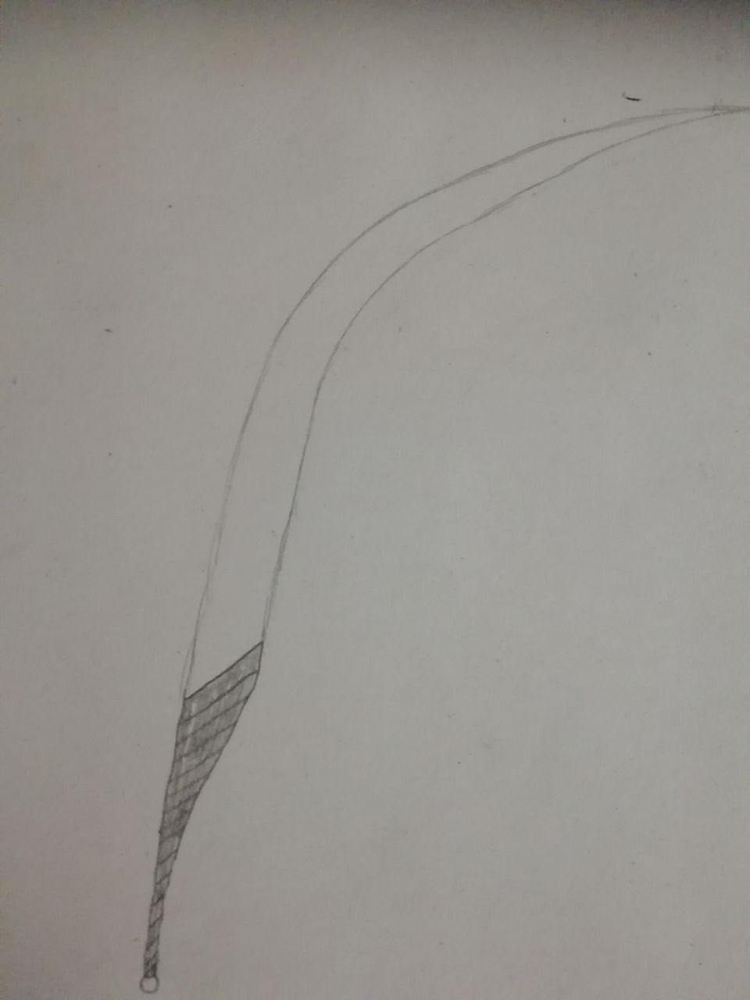
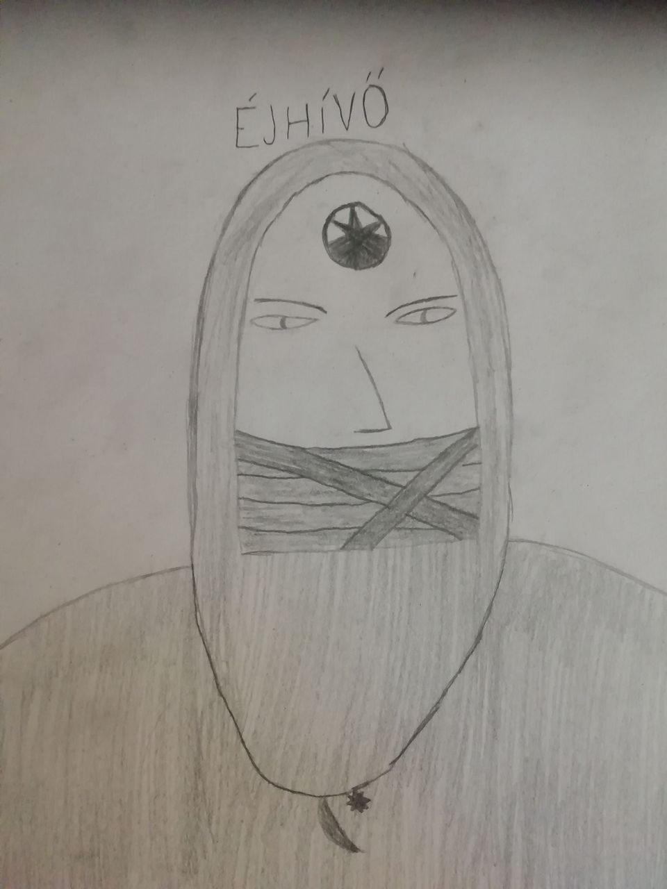

Már reggel van. Márk és Maya egész éjjel ébren voltak. A tábortüzet Maya egész ejjel éltette. Éjjel hiába kopogott, senki se válaszolt. Márk azóta se mozdult. Maya már-már elaludt Márk mellett kuporogva, mikor az egyik ajtó kinyílt, és kirohant rajta egy öregasszony. Kiabálva futott Maya és Márk irányába. A kiabálásra Maya fel ébredt félálmából. - Istenkém! Jól vagytok gyerekek? -kérdezte az öregasszony. Márk az ismerős hangra magához tért, és elkezdte magyarázni a néninek hogy mi történt. Mikor Maya teljesen magához tért már csak ennyit hallot: "- Egész éjjel fent voltatok? - Igen, de nem halotta? ÉDESANYÁM MEGHALT!!! - Ez nem jó... Ez nagyon nem jó... El kell hogy hagyjátok a falut! - Tessék? Most mondtam hogy meg- - MOST!" Ekkor már Maya is beleszólt. - De egyedül éhen fogunk halni! Nem tehetnek ki csak így! Mit szólna hozzá az anyám?! - Biztos vagyok benne hogy a nevelőd is így döntene. - Nevelőd? -kérdezte Márk. - Sohasem ismertem édesanyám. -kezdte Maya.- Amikor ki- - ERRE MOST NINCS IDŐ!!! -vágta félbe az öregasszony- MOST AZONNAL EL KELL HOGY HAGYJÁTOK A FALUT!!! Nem értitek mit tettetek? Az egész falu veszélyben van míg itt vagytok. - Miről beszél? -Csodálkozott Márk- Miért lenne veszélyben a falu? Hisz csak gyerekek vagyunk! - Sose mesélt róla édesanyád? -kérdezte a néni. - Miről? - A kultistákról. - Nem, soha, egy szót se. - Hmm... Biztos megvolt az oka. Nem volt bolond... -mormolta magában.- Rendben van! -kiáltott fel- fogjatok annyi kenyeret amennyit bírtok, és induljatok! - De mi van a kultis- - Ha édesanyád nem mondta meg, én se fogom! Most induljatok! -ezzel Márk és Maya megszedte magát, és egy nagy táskát kenyérrel, majd útnak indultak. Egész nap mentek. Maya írt egy listát az érdekességekről amiket útközben látott.  - Egyébként nem sikerült sokat beszélgetnünk az éjjel. -mondta Maya- Te mit szeretsz csinálni szabadidődben?- Márk végignézett Mayán. A fekete csizmájától a szürke nadrágján és bordó szövetkabátján keresztül a csillogó, barna szeméméig és gyönyörű, hosszú, szürke hajáig, majd szusszant egyet, és így szólt: - Szabadidőmben?... Hazudnék ha azt mondanám a többiekkel játszok. Inkább olvasni szoktam, vagy aludni. - Mit szoktál olvasni? -kérdezte Maya. - Főleg horrorsztorikat szörnyekről. - És, miféle szörnyekről? - ... Az éji rémekről... -Márk lesütötte a szemét. - Oh. Mik azok az éji rémek?- Márk egy kicsit nevetett, majd kotorászni kezdett a zsebében. Sikerült kivennie egy összehajtott könyvlapot, amit odaadott Mayának. Maya széthajtotta majd hangosan felolvasta: -"Az éji rém Azt modják hogy az első éji rém lett az éjkirály.Legendákban hallani, hogy az első telihold idején földre vetülő árnyékból született az éjkirály, hogy a sziklákin levő repedésej adtáj a testét, és az azokban található ércek a fejét,így annak erejét. Egyesek szerint egy átok, mások szerint áldás, és istenjént tisztelik, imádkoznak hozzá. Egyesek túl messzire mennek, és megpróbálnak egyéválni vele. Külőnféle rituálékat végeznek. Egyesek meg is halnak; de mások, akiknek sikerül, ők lesznek az éji rémek. A hívők azt mondják, hogy csak az lehet 'az éjkirály katonája', aki méltó rá. Aki nem az, azt az éjkirály elragadja magával. Legalább is azt mondják az éjhívők. Senki se tudja hogyan jöttek létre, csak teóriák vannak róla. Ismertető jelük az, hogy rettenetesen vékonyak, és elképestően gyorsak. Sok szemtanú nem maradt életben, de mind ugyanúgy írta le a lényt: hajszálvékony, repedésszerű anatómia, tüske szerű fej, és némelyíknek szárnya is van. (A KÉP CSAK ILLUSZTRÁCIÓ)"  (tudom, elrontja az, hogy vonalas a lap, de egyébként még csúnyább lenne az írás) - De, nem azt mondtad, hogy még sohase hallottál az éjhívőkről? -kérdezte Maya. - Nem. Aztmondtam, hogy édesanyám sohasem mesélt róluk. De egyébként sem találtam több szöveget se az éjkirályról, se az éjhívőkről. - Hát az éjirémekről? - Azokról nem is kerestem. Eleget mesélt róluk édesanyám... Mégse hallgattam rá...- Maya egy szót se szólt, csak a földre nézett. Már elkezdett esteledni, mikor beértek egy erdőbe. - Látod ezt Márk? -kérdezte Maya- Tele vannak levelekkel a fák! - Valóban elképesztő. -Mondta Márk. Egy faházhoz értek mikor már teljesen besötétedett. A házban égett a tűz. Márk és Maya bekopogtak. Nincs válasz. Egymásra néztek, bólintottak, majd óvatosan kinyitották az ajtót. A ház egy nagy szobából állt, ahol volt ágy, tűzrakóhely és fazék, polcok, és egy aranyos kis szék. A fazék alatt égett a tűz, de a ház teljesen üres volt. Mikor Márk és Maya belépett, a tűz azonnal elaludt. - EZ CSAPDA! -kiabált Márk. - Mi lesz most? -szinte sírt Maya. - Ne aggódj! Majd én megvédelek! Egy darabig vártak, de senki, és semmi nem jött. - Hmmm... Érdekes. -mondta Márk, míg Maya a földre legúggolt, és fejét a térdére tette. - Körülnézek. -Szólalt meg ismét Márk. Márk kiment az ajtón, majd körülnézett, de semmit sem látott. Messzebre merészkedett a háztól, de még mindig nem látott semmit. Ezen az se segített, hogy a fák lombja teljesen eltakarta a holdat, így vak sötét volt. Amikor visszatért a házhoz azt látta hogy Maya remegve sír a padlón. Márk gyorsan mellégúggolt, és megölelte. - Semmi baj. Nincs itt semmi. Nincs mitől félni. -vígasztalta. Egyszercsak lépéseket hallottak. - Jönnek értünk! -Suttogta Maya. - Dehogy. Az ő léptüket nem hallanánk. -Mondta Márk. Azt vették észre, hogy ahogy a léptek közeledtek, egyre világosabb lett. Egyszercsak abba maradtak a lépések. Egy kevés idő elteltével, nyílt az ajtó. Egy ember lépett be. Márk nem látta az arcát, mert valami olyan erősen világított az ember kezében. - De örülök hogy nem éji rémek vagytok, nem kell felgyújtanom a házat. -Mondta az ember. A hangján hallani lehetett hogy egy öregember. A kezében lévő fényes dolog, mostmár kevésbé erősen világított, és mostmár lehetett látni az arcát, és ruházatát. Ősz szakálla, és hatalmas orra volt. A ruhája úgy nézett ki, mintha egy matróz lett volna, egy barna bőrkabátban. Még pipája is volt. Mostmár lehetett látni, hogy a kezében lévő fényes dolog, egy láng volt, ami a keze felett lebegett. Hirtelen a fazék alá dobta a lángot, amitől a tűzrakóhely újra felgyulladt. - Hadd mutatkozzak be.-Mondta az öregember- A nevem Ronald. Hát a tietek hogy hívnak? - Én Márk vagyok. -Mondta Márk. - Én Maya. -Mondta Maya. - Várjunk csak. -mondta Ronald- Nem ti vagytok- Hirtelen egy nagy reccsenés hallatszott az erdőből. - Várjatok itt! -Mondta. Ekkor újból tűz gyúlott a kezében, és kiment az ajtón. Márk gyorsan odaszaladt az ablakhoz hogy lássa mi történik, míg Maya ismét összekuporodott. Márk csak annyit látott, hogy egy fa kidől, és emellet egy ember állt. Az arcát, vagy ruházatát nem látta, csak a sziluettjét. Ronald az ember irányába rohant, míg az egy kard-szerű eszkőzzel, egy csapással kivágta a következő fát.  Amikor észrevette Ronaldot, felé szegezte kard-szerű ezközét, majd suhintott vele egyet a levegőben. Ez azt jelentette, hogy készen áll a harcra. Ronald kicsit meghökkent, de egyből utána, válaszul még fényesebbé, még nagyobbá tette a lágot a kezében. Az ember csak arrébb ment, majd ismét kivágott egy fát. Ronald odarohant hozzá, és megpróbálta megütni, de az ember kivédte. - Mit csinál? Miért nem használja a tüzet? -Gondolta magában Márk. Miután elhajolt ütése elől, a lény meglökte Ronaldot. Ronald hátra esett, és tüze megyújtotta az egyik fát. - Nehezebbre számítottam. -mondta az ember- Bolond vagy. Majd suhintott egyet a karddal, és félbevágta Ronaldot. A tűz a fazék alatt kialudt, viszont az erdőtűz nem. Ezután Márkra nézett. A tűz megvilágitotta az embert, és Márk látta, hogy homlokán az éjhívők jele van.  - A többi nem az én dolgom. -Mondta az éjhívő, majd megfordult és elment. Márk legszívesebben utánaszaladt volna, hisz az éjhívő csak sétált, így könnyedén utólérhette volna, de tudta, hogy meg kell védenie Mayát. - Mit tegyek? Mit tegyek? Mit tegyek? -Gondolkodott Márk. - Megvan! Maya maradj itt, én mindjárt jövök! -Mondta, majd kirohant az ajtón, megfogott egy vastagabb ágat, meggyújtotta, majd visszament a házba, hogy újra megyútsa a tüzet. Ezután csak ennyit hallot maga mögül: - Nem vagy olyan hülye mint azt gondoltam. Az éjhívő volt. - Muszály lesz hogy megöljelek. -Mondta- Kár érted. Felemelte az eszközt, és lecsapott vele. Valami megfogta a pengét. Fekete füst vette körül, nem csak az eszözt, hanem az egész embert. Maya kezét szintén füst borította. Maya ökölbe szorította a kezét, és így az éjhívő felrobbant, a fegyvere pedig egy golyóvá gyúródott. - Maya ezt te csináltad? -Kérdezte Márk. - Nemtudom, én- én csak nem akartam hogy bajod essen. -Mondta Maya. - De jól vagy? - Jól. - Úgytűnik valamiféle varázs erőd van. - Lehet. - Nemtudod csak úgy használni? - Nem. Azt se tudom, most hogy sikerült. - Hmmm... Mindegy, mostmár mindjárt fel kel a nap, úgyhogy lassan indulnunk kell. - Igazad van.